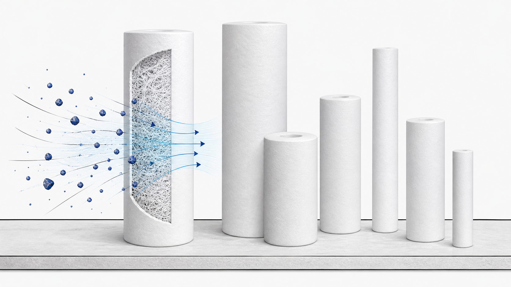

Lõi lọc cặn PP thổi nóng chảy
PP · chỉ các thông tin thực tế đã được chấp nhậnLõi lọc cặn PP thổi nóng chảy là phần tử lọc chiều sâu dùng để giữ lại cặn lơ lửng trước các công đoạn xử lý phía sau. Kích thước cuối cùng, cấp lọc micron, cấu hình đầu lõi và độ tương thích với vỏ lọc được lựa chọn theo dự án.

Thông tin kỹ thuật đã được xác minh
Các tùy chọn được liệt kê trong nguồn phải được đối chiếu và xác nhận theo báo giá và bản vẽ sản xuất.
Cấu hình
- PP
- Vật liệu: PP
- Thổi nóng chảy
- Xác nhận chiều dài lõi lọc, đường kính ngoài và đường kính trong, cấp lọc micron, cấu hình đầu lõi, vật liệu làm kín và độ tương thích với vỏ lọc trước khi báo giá.
Cách lựa chọn
- Gửi thông tin về ứng dụng, tình trạng nước cấp và công đoạn kiểm soát cặn cần thiết.
- Xác nhận chiều dài lõi lọc, đường kính ngoài (OD), đường kính trong (ID), cấp lọc micron, cấu hình đầu lõi và vật liệu làm kín.
- Xác nhận kiểu kết nối với vỏ lọc, số lượng, quy cách đóng gói và các tài liệu cần có.
Cách lựa chọn
Lõi lọc cặn PP thổi nóng chảy là gì?
Đây là phần tử lọc chiều sâu bằng polypropylene dùng để giữ lại cặn lơ lửng trước các công đoạn xử lý phía sau. Dự án quyết định việc lựa chọn kích thước, cấp lọc micron và cấu hình đầu lõi.
Người mua cần xác nhận những gì đối với lõi lọc cặn PP thổi nóng chảy?
Xác nhận chiều dài lõi lọc, đường kính ngoài và đường kính trong, cấp lọc micron, cấu hình đầu lõi, vật liệu làm kín và độ tương thích với vỏ lọc trước khi báo giá.
Yêu cầu báo giá kỹ thuật: Lõi lọc cặn PP thổi nóng chảy
Xác nhận chiều dài lõi lọc, đường kính ngoài và đường kính trong, cấp lọc micron, cấu hình đầu lõi, vật liệu làm kín và độ tương thích với vỏ lọc trước khi báo giá.